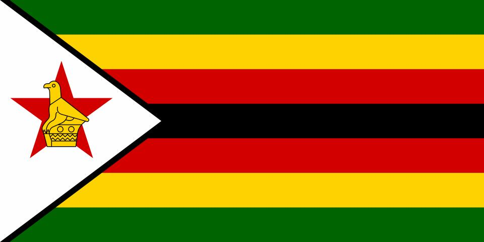

Tendayi Gabriel Mazvomba
About Me
I am Tendayi Gabriel Mazvomba, a banking and product management professional with a passion for technology, innovation, and continuous learning. My experience includes developing customer-focused solutions, enhancing products and services, and driving business growth through strategic thinking and problem-solving. I am currently expanding mu skills in web development through BYU Pathway, where I enjoy building digital solutions that address real-world challenges. I believe success is achieved through integrity, lifelong learning, and creating meaningful value for people, organizations, and the communities they serve.
Bulawayo, Zimbabwe

Zimbabwe is a beautiful landlocked country in Southern Africa known for its stunning natural landscapes, rich cultural heritage, and resilient people. It is home to world-renowned attractions such as Victoria Falls and the historic Great Zimbabwe ruins, reflecting the nation's natural beauty and historical significance. Zimbabwe also boasts diverse wildlife, vibrant traditions, and major cities such as Harare and Bulawayo, which contribute to commerce, education, and cultural development. With strong foundations in agriculture, mining, tourism, and entrepreneurship, Zimbabwe continues to inspire pride, progress, and opportunity.